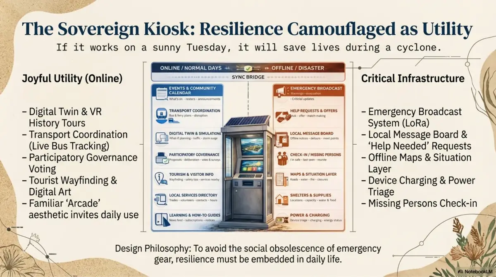

Explain a real need and ask the people affected whether the idea is useful.
Earlier research · longer-term ideas
Explore where local learning could lead.
Mineral Moonshots is a separate collection of Luke's research into materials, technology and possible future industries. This page explains its connection to the earlier Ready SETCO ideas. It is optional background, with no adopted projects, secured funding or operating facilities implied.

The connection to everyday work
Start with skills people can use.
People learning to repair equipment, document a project or work with digital tools can also help investigate new ideas. The connection is practical learning: try a small task, check the result and share what was learned.
Ready SETCO's immediate focus remains local events, training, work and useful shared services. As members, we would decide whether any longer-term research becomes a cooperative project.

Before an idea becomes a project
Questions worth asking together.
These are questions for anyone exploring an earlier research idea.
Separate a drawing or proposal from demonstrated results and an operating service.
Agree the team, costs, permissions, training and ongoing care before committing.
Deep links
Read the earlier research.
The separate Mineral Moonshots website explores possible materials and technology projects. Its build path describes possible stages of investigation, while the community briefs explore how shared learning spaces might fit. These are research proposals.
Your choice
Take part at a scale that suits you.
You can ask about a local activity without taking on these wider ideas. If a research topic interests you, tell Luke what you would like to explore.